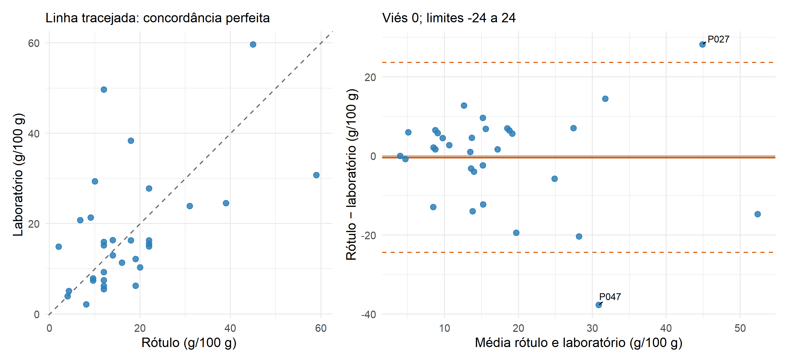
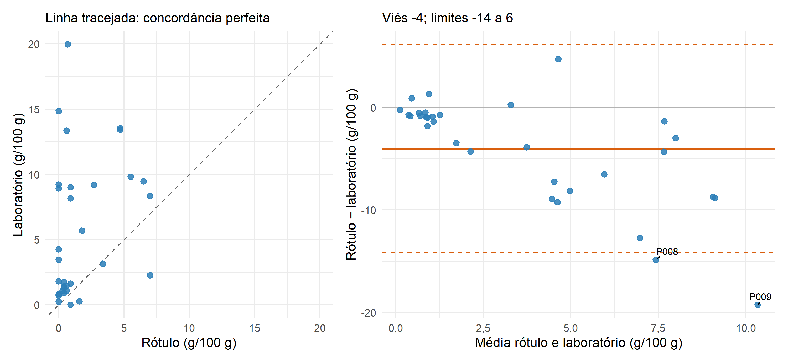
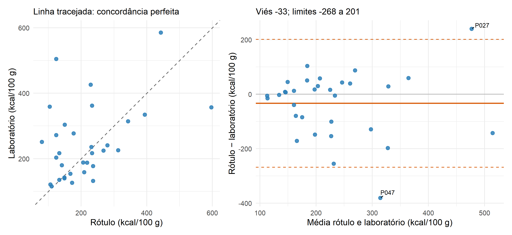

| Variável | N = 321 |
|---|---|
| Proteína – rótulo | 14,0 [10,0–17,0] |
| Proteína – laboratório | 15,9 [13,0–18,9] |
| Gordura total – rótulo | 13,0 [9,8–21,0] |
| Gordura total – laboratório | 15,1 [7,7–22,6] |
| Carboidratos – rótulo | 0,6 [0,0–2,3] |
| Carboidratos – laboratório | 3,3 [1,2–9,2] |
| Energia – rótulo | 191,5 [133,0–236,0] |
| Energia – laboratório | 221,0 [156,4–309,1] |
| Sódio – rótulo | 2.738,0 [635,0–3.784,0] |
| Sódio – laboratório | 2.771,7 [1.900,0–5.875,0] |
| 1 Mediana [Q1–Q3] | |
| Unidades: g/100 g (proteína, gordura, carboidratos), kcal/100 g (energia) e mg/100 g (sódio). | |
4 · Rótulo × laboratório (FoodScan)
Objetivo e método
Comparar o valor declarado no rótulo com o valor medido em laboratório (FoodScan) para proteína, gordura total, carboidratos, energia e sódio, nos produtos que têm os dois valores. A diferença é sempre calculada como rótulo − laboratório.
| Pergunta | Análise |
|---|---|
| Os valores centrais diferem? | Teste de Wilcoxon pareado, com diferença mediana (pseudomediana) e IC 95%; valores de p ajustados por Holm entre os cinco nutrientes |
| Os produtos mantêm a mesma ordem? | Correlação de Spearman, com IC 95% |
| Há concordância (e não só associação)? | Coeficiente de concordância de Lin (CCC) e coeficiente de correlação intraclasse (CCI, modelo two-way, concordância absoluta), ambos com IC 95% |
| Qual o tamanho do erro e sua variação? | Bland-Altman: viés (IC 95%) e limites de concordância de 95% |
Nível de significância de 5%. Nenhum valor foi excluído. A energia do laboratório foi obtida convertendo o valor em kJ para kcal (kJ ÷ 4,184).
Produtos com valor de laboratório: 32 de 48.
Descrição: rótulo e laboratório
Teste pareado: o rótulo difere do laboratório?
| Nutriente | n | Diferença mediana [IC 95%] | p | p (Holm) |
|---|---|---|---|---|
| Proteína | 32 | -2,35 [-5,08; -0,58] | 0,010 | 0,030 |
| Gordura total | 32 | 1,10 [-4,00; 4,36] | 0,594 | 0,832 |
| Carboidratos | 32 | -3,65 [-5,13; -1,35] | <0,001 | <0,001 |
| Energia | 32 | -24,92 [-69,40; 18,91] | 0,416 | 0,832 |
| Sódio | 32 | -1406,76 [-2099,35; -637,00] | 0,004 | 0,015 |
| Nota. Diferença mediana = pseudomediana das diferenças pareadas (rótulo − laboratório). Holm: correção para os cinco nutrientes. | ||||
NotaInterpretação
O que o teste responde. O teste de Wilcoxon pareado compara, produto a produto, o valor do rótulo com o do laboratório e pergunta se a diferença típica é diferente de zero. O valor de p é a probabilidade de observar uma diferença tão grande (ou maior) se, na verdade, rótulo e laboratório não diferissem em média: quanto menor o p, menos compatível o resultado é com “nenhuma diferença”. Adota-se o limite de 5% (p < 0,05). Como são cinco nutrientes testados ao mesmo tempo, o ajuste de Holm evita falsos positivos por acaso. O p diz se há diferença; o IC 95% da diferença mediana diz quão grande ela é, e um resultado pode ser significativo e ainda assim pequeno na prática (ou o contrário, em amostras pequenas).
Proteína (n = 32): a diferença mediana (rótulo − laboratório) é de -2,35 g/100 g (IC 95%: -5,08 a -0,58); p = 0,010; p ajustado (Holm) = 0,030. A diferença é estatisticamente significativa, mesmo após o ajuste de Holm para os cinco nutrientes: o rótulo declara menos do que o laboratório mede.
Gordura total (n = 32): a diferença mediana (rótulo − laboratório) é de 1,10 g/100 g (IC 95%: -4,00 a 4,36); p = 0,594; p ajustado (Holm) = 0,832. Não há evidência estatística de diferença sistemática entre rótulo e laboratório. Isso não prova que os valores concordam (a amostra é pequena e o teste pode não ter poder suficiente); veja a concordância adiante.
Carboidratos (n = 32): a diferença mediana (rótulo − laboratório) é de -3,65 g/100 g (IC 95%: -5,13 a -1,35); p < 0,001; p ajustado (Holm) < 0,001. A diferença é estatisticamente significativa, mesmo após o ajuste de Holm para os cinco nutrientes: o rótulo declara menos do que o laboratório mede.
Energia (n = 32): a diferença mediana (rótulo − laboratório) é de -24,92 kcal/100 g (IC 95%: -69,40 a 18,91); p = 0,416; p ajustado (Holm) = 0,832. Não há evidência estatística de diferença sistemática entre rótulo e laboratório. Isso não prova que os valores concordam (a amostra é pequena e o teste pode não ter poder suficiente); veja a concordância adiante.
Sódio (n = 32): a diferença mediana (rótulo − laboratório) é de -1406,76 mg/100 g (IC 95%: -2099,35 a -637,00); p = 0,004; p ajustado (Holm) = 0,015. A diferença é estatisticamente significativa, mesmo após o ajuste de Holm para os cinco nutrientes: o rótulo declara menos do que o laboratório mede.
Em resumo: após o ajuste de Holm, 3 dos 5 nutrientes têm diferença estatisticamente significativa entre rótulo e laboratório (Proteína, Carboidratos e Sódio).
Concordância
| Nutriente | Spearman | CCC de Lin | CCI | Viés (Bland-Altman) | Limites de concordância |
|---|---|---|---|---|---|
| Proteína | 0,34 [-0,01; 0,62] | 0,36 [0,07; 0,60] | 0,37 [0,04; 0,63] | -3,05 [-5,08; -1,02] | -14,08 a 7,98 |
| Gordura total | 0,49 [0,17; 0,71] | 0,52 [0,22; 0,73] | 0,53 [0,23; 0,74] | -0,38 [-4,80; 4,04] | -24,40 a 23,64 |
| Carboidratos | 0,32 [-0,04; 0,60] | 0,14 [-0,03; 0,30] | 0,14 [-0,11; 0,41] | -4,00 [-5,86; -2,13] | -14,15 a 6,16 |
| Energia | 0,31 [-0,04; 0,59] | 0,41 [0,10; 0,65] | 0,42 [0,10; 0,66] | -33,14 [-76,30; 10,01] | -267,76 a 201,47 |
| Sódio | 0,54 [0,24; 0,75] | 0,68 [0,50; 0,81] | 0,69 [0,38; 0,85] | -1383,42 [-2263,74; -503,10] | -6169,11 a 3402,28 |
| Nota. Valores como estimativa [IC 95%]. Viés e limites na unidade de cada nutriente. | |||||
NotaInterpretação
Associação não é concordância. Dois conjuntos podem estar fortemente correlacionados e ainda assim discordar (por exemplo, o rótulo sempre menor que o laboratório). Por isso há três perspectivas: (1) Spearman (ρ) mede só se a ordem dos produtos se mantém (fraca < 0,40, moderada 0,40–0,69, forte ≥ 0,70); (2) CCC de Lin e CCI medem a concordância de fato, penalizando também o desvio sistemático (leitura: < 0,50 baixa, 0,50–0,74 moderada, 0,75–0,89 boa, ≥ 0,90 excelente); (3) o Bland-Altman dá o viés e a faixa em que 95% das diferenças devem cair, já na unidade do nutriente. Os IC 95% são largos porque há só 32 produtos, e os limites devem ser lidos junto das estimativas.
Proteína: correlação de Spearman ρ = 0,34 (IC 95%: -0,01 a 0,62), fraca: produtos com valor alto no rótulo nem sempre têm valor alto no laboratório (a ordem entre os produtos é pouco preservada). CCC de Lin = 0,36 (IC: 0,07 a 0,60) e CCI = 0,37 (IC: 0,04 a 0,63), ambos indicando concordância baixa. No Bland-Altman, o viés é -3,05 g/100 g e 95% das diferenças esperadas ficam entre -14,08 e 7,98 g/100 g (amplitude de 22,06 g/100 g, ou 138% da mediana do laboratório).
Gordura total: correlação de Spearman ρ = 0,49 (IC 95%: 0,17 a 0,71), moderada: a ordem entre os produtos é parcialmente preservada. CCC de Lin = 0,52 (IC: 0,22 a 0,73) e CCI = 0,53 (IC: 0,23 a 0,74), ambos indicando concordância moderada. No Bland-Altman, o viés é -0,38 g/100 g e 95% das diferenças esperadas ficam entre -24,40 e 23,64 g/100 g (amplitude de 48,04 g/100 g, ou 318% da mediana do laboratório).
Carboidratos: correlação de Spearman ρ = 0,32 (IC 95%: -0,04 a 0,60), fraca: produtos com valor alto no rótulo nem sempre têm valor alto no laboratório (a ordem entre os produtos é pouco preservada). CCC de Lin = 0,14 (IC: -0,03 a 0,30) e CCI = 0,14 (IC: -0,11 a 0,41), ambos indicando concordância baixa. No Bland-Altman, o viés é -4,00 g/100 g e 95% das diferenças esperadas ficam entre -14,15 e 6,16 g/100 g (amplitude de 20,32 g/100 g, ou 615% da mediana do laboratório).
Energia: correlação de Spearman ρ = 0,31 (IC 95%: -0,04 a 0,59), fraca: produtos com valor alto no rótulo nem sempre têm valor alto no laboratório (a ordem entre os produtos é pouco preservada). CCC de Lin = 0,41 (IC: 0,10 a 0,65) e CCI = 0,42 (IC: 0,10 a 0,66), ambos indicando concordância baixa. No Bland-Altman, o viés é -33,14 kcal/100 g e 95% das diferenças esperadas ficam entre -267,76 e 201,47 kcal/100 g (amplitude de 469,24 kcal/100 g, ou 212% da mediana do laboratório).
Sódio: correlação de Spearman ρ = 0,54 (IC 95%: 0,24 a 0,75), moderada: a ordem entre os produtos é parcialmente preservada. CCC de Lin = 0,68 (IC: 0,50 a 0,81) e CCI = 0,69 (IC: 0,38 a 0,85), ambos indicando concordância moderada. No Bland-Altman, o viés é -1383,42 mg/100 g e 95% das diferenças esperadas ficam entre -6169,11 e 3402,28 mg/100 g (amplitude de 9571,40 mg/100 g, ou 345% da mediana do laboratório).
Em resumo: nenhum nutriente atinge concordância boa (CCC e CCI ≥ 0,75). A concordância é baixa para Proteína, Carboidratos e Energia: nesses casos o rótulo não é um bom substituto do valor medido em laboratório. O sódio deve ser lido com cautela enquanto os valores altos do laboratório não forem checados.
Gráficos por nutriente
À esquerda, dispersão com a linha de identidade (pontos sobre a linha = rótulo igual ao laboratório). À direita, Bland-Altman: linha cheia = viés; tracejadas = limites de concordância de 95%. Os produtos fora dos limites aparecem identificados.
Proteína

NotaInterpretação
Em média, rótulo e laboratório diferem em -3,05 g/100 g (viés; rótulo − laboratório), e os limites de concordância de 95% vão de -14,08 a 7,98 g/100 g. Ficam fora desses limites: P033 e P048. Quanto mais larga a faixa entre as linhas tracejadas, maior a incerteza de que o rótulo reproduza o valor do laboratório em um produto qualquer.
Gordura total

NotaInterpretação
Em média, rótulo e laboratório diferem em -0,38 g/100 g (viés; rótulo − laboratório), e os limites de concordância de 95% vão de -24,40 a 23,64 g/100 g. Ficam fora desses limites: P027 e P047. Quanto mais larga a faixa entre as linhas tracejadas, maior a incerteza de que o rótulo reproduza o valor do laboratório em um produto qualquer.
Carboidratos

NotaInterpretação
Em média, rótulo e laboratório diferem em -4,00 g/100 g (viés; rótulo − laboratório), e os limites de concordância de 95% vão de -14,15 a 6,16 g/100 g. Ficam fora desses limites: P008 e P009. Quanto mais larga a faixa entre as linhas tracejadas, maior a incerteza de que o rótulo reproduza o valor do laboratório em um produto qualquer.
Energia

NotaInterpretação
Em média, rótulo e laboratório diferem em -33,14 kcal/100 g (viés; rótulo − laboratório), e os limites de concordância de 95% vão de -267,76 a 201,47 kcal/100 g. Ficam fora desses limites: P027 e P047. Quanto mais larga a faixa entre as linhas tracejadas, maior a incerteza de que o rótulo reproduza o valor do laboratório em um produto qualquer.
A conversão kJ ÷ 4,184 difere da coluna de kcal já presente na planilha em no máximo 2,1% (por produto).
Sódio
AvisoResultados provisórios
Há valores de sódio de laboratório muito altos (acima de 11.800 mg/100 g). Eles não foram excluídos; a checagem (unidade, digitação ou valor real) ainda está pendente, e as estatísticas de sódio devem ser lidas com cautela.

NotaInterpretação
Em média, rótulo e laboratório diferem em -1383,42 mg/100 g (viés; rótulo − laboratório), e os limites de concordância de 95% vão de -6169,11 a 3402,28 mg/100 g. Ficam fora desses limites: P043. Quanto mais larga a faixa entre as linhas tracejadas, maior a incerteza de que o rótulo reproduza o valor do laboratório em um produto qualquer. Como parte dos valores de laboratório está sob verificação, o viés e os limites do sódio podem mudar depois da checagem.
| Produto | Linha na planilha | Célula (laboratório) | Sódio – laboratório | Célula (rótulo) | Sódio – rótulo |
|---|---|---|---|---|---|
| P009 | 10 | BB10 | 13383,3 | AD10 | 8738 |
| P011 | 12 | BB12 | 12976,7 | AD12 | 7344 |
| P008 | 9 | BB9 | 12323,3 | AD9 | 7900 |
| P020 | 21 | BB21 | 12000,0 | AD21 | 7308 |
| P043 | 44 | BB44 | 11876,7 | AD44 | 3735 |
| Nota. Produtos ordenados do maior para o menor valor de laboratório; nenhum valor foi excluído. | |||||